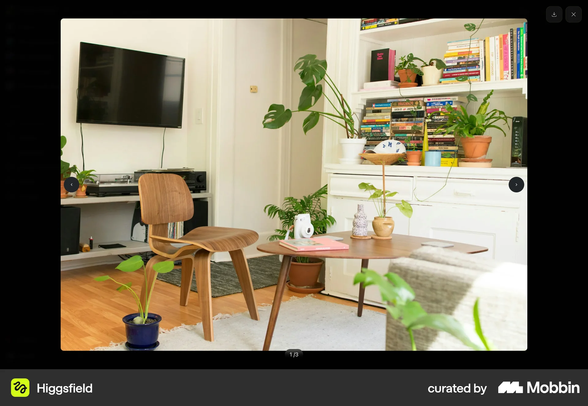
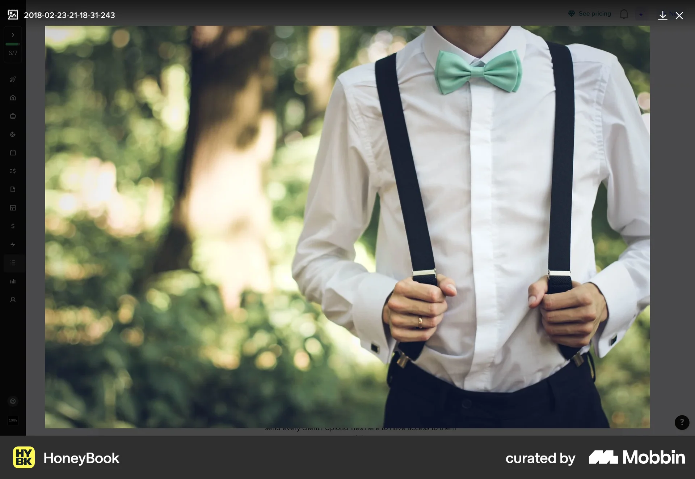
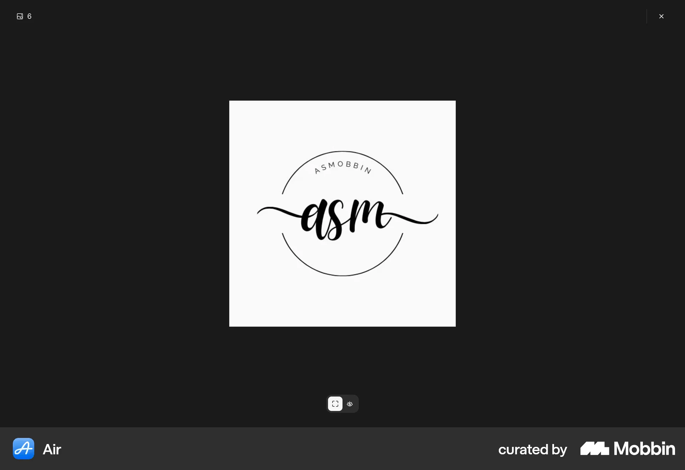

TAEWON SEO / SPATIAL RESEARCH / 30 SEP 2026
밀키만 남기고,
공간을 처음부터.
기존 버전은 책상방의 형태를 유지한 소재 변경이었습니다. 이번 설계는 방의 구조·가구 배치·창밖 풍경·조명·웹 UI를 모두 교체합니다. 밀키의 외형과 애니메이션만 시각 자산으로 재사용합니다. 날씨·음악 기능은 새 화면에 연결합니다.
01. 광공 인테리어는 무엇인가요?
‘광공’은 BL 캐릭터 유형에서 비롯된 표현입니다. 리디 공식 용어 설명은 블랙 톤의 집을 그 캐릭터의 전형적인 특징 중 하나로 소개합니다. 다만 ‘광공 인테리어’는 정식 건축 양식명이 아닙니다. 이번 작업에서는 이를 경제적 여유, 강한 통제감, 정리된 생활, 차가운 고급스러움을 드러내는 공간 연출로 해석합니다. 이것은 사실 확인과 구분되는 디자인 해석입니다.
검정 페인트만 칠해도 그 분위기가 만들어지지는 않습니다. 넓은 여백, 긴 수평선, 소수의 큰 가구, 숨겨진 수납, 창밖과 실내의 명암 차이가 함께 작동하도록 설계합니다. 화려한 금장과 장식 샹들리에는 이번 해석에서 제외합니다.
02. 건축과 가구의 근거
건축·제품 자료는 원문 설명을 읽었습니다. 이 보고서는 해당 건축 사진을 직접 열람했다고 주장하지 않습니다. 아래 UI 자료의 실제 이미지는 MCP에서 별도로 확인했습니다.
03. 새 구도와 가구 배치
정면 책상을 없애고, 오른쪽 앞에서 왼쪽 뒤로 시선이 들어가는 코너 펜트하우스로 바꿉니다. 소파는 왼쪽 중경, 석재 테이블은 중앙 중경, 오디오는 오른쪽 벽에 둡니다. 앞쪽 약 ⅓은 빈 석재 바닥으로 남겨 공간의 규모와 밀키의 움직임이 잘 드러나게 합니다.
화면 계획상 소파는 x 6–52%, 테이블은 x 35–58%, 오디오 선반은 x 76–100%에 놓습니다. 이 수치는 생성된 원화에 맞춘 화면 좌표이며 실제 시공 도면이나 가구 구매 규격이 아닙니다. 모바일에서는 바닥이 잘리지 않도록 하단을 기준으로 구도를 맞춥니다.
04. 색, 소재, 빛
검정 가죽은 부드러운 반광, 바닥은 큰 판재의 흐린 반사, 테이블은 희미한 광맥, 금속은 가는 하이라이트로 구분합니다. 조명은 3000K 안팎으로 보이는 중성에 가까운 따뜻한 선형광을 시각적 목표로 삼습니다. 실제 조도·색온도를 측정한 수치는 아닙니다. 야간에도 검정 면이 하나의 덩어리로 뭉개지지 않게 바닥과 가구의 경계를 남깁니다.
밤·낮·저녁은 각각 새로 그린 원화를 사용합니다. 날씨 효과는 새 통창의 영역에만 적용하고 밀키에는 필터를 입히지 않습니다. 계절은 창가의 색감과 음악 선택에 반영합니다. 큰 계절 장식은 비워 둔 실내 원칙 때문에 추가하지 않습니다.
05. 웹 화면 참고 — 현재 세션 MCP

이미지가 중심이고 화살표·닫기 버튼은 가장자리에 있습니다. 이 위계를 적용하되 사진 속 식물·목재 인테리어는 채택하지 않습니다.

얕은 상단 바와 넓은 이미지가 특징입니다. 방을 가리는 큰 카드 대신 가장자리 메뉴를 사용합니다.

차콜 바탕과 매우 적은 조작부를 확인했습니다. 여백은 적용하고 버튼은 접근성을 위해 44px 이상으로 만듭니다.
21st Editorial Image Hero · 19077: 전체 컴포넌트와 데모 소스를 확인했습니다. 큰 이미지, 세리프 제목, reduced-motion 배려를 참고합니다. Experience Hero · 9724: 모노톤과 가장자리 배치는 참고하되 WebGL·GSAP·큰 문구·통계 카드는 제외합니다. 코드 복사나 신규 런타임 의존성 추가는 하지 않습니다.
Hail Mary Studio의 현재 Vercel 테마 토큰(surface #090909, muted #A4A4A4, border #242424)을 확인했습니다. 제품 정체성은 Taewon Seo의 개인 공간으로 유지합니다.
06. 보존과 검증
재색상 버전 백업: backup/noir-restyle-20260930 / caef110. 최초 스타일 백업: backup/original-interior-20260930 / 924c42e. 새 기본 화면은 과거 방·가구·도시 이미지를 불러오지 않습니다. 과거 버전은 비교 URL로 분리합니다.
Studio 동기화: 미연결 개인 프로젝트이므로 로컬 초안을 보존했습니다. 연결된 Studio 연구 게이트 통과를 주장하지 않습니다. 정확한 도구·조회·결과 ID·채택 이유는 research.json에 있습니다. 최종 기능 검증 결과는 저장소의 구현 기록에 남깁니다.